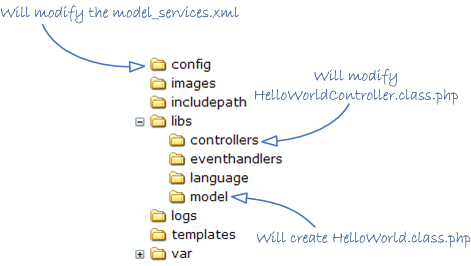
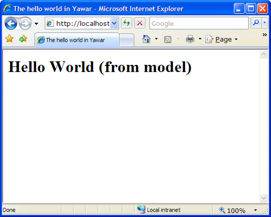

<table cellpadding="10" cellspacing="0" width="100%" border="0"><tr><td valign="top">
<div><a name=""></a><h1>The Advanced Hello World</h1>
  <div class="ref-purpose">Using the MVC - Accessing the Model</div>
 <div class="ref-synopsis"><p><center><div class="messagebox note metadata plainlinks"><table style="width:100%; background:none"><tr><td width="60"></td><td><p>Note that all the source code used in this tutorial is available to <strong>download</strong> and to <strong>see in action</strong>:
    <ul><li><a href="http://bamboo.lionframework.org/download/LION-STABLE/artifacts/build-29/Deliverables/tutorial2-1.4.29-stable.tgz">Download the source code</a></li>
      <li><a href="http://www.lionframework.org/tutorials/1.4.29-stable/tutorial2">See the application in action</a></li></ul></p></td></tr></table></div></center></p></div>
<h2>Table of Contents</h2>
<ul>

<a href="../../Lion/Tutorials/tutorial_Lion.tutorial2.pkg.html#intro">Goal</a><br />

<a href="../../Lion/Tutorials/tutorial_Lion.tutorial2.pkg.html#creating_the_model_class">Creating a model class</a><br />

<a href="../../Lion/Tutorials/tutorial_Lion.tutorial2.pkg.html#placing_the_controller">Placing the model class</a><br />

<a href="../../Lion/Tutorials/tutorial_Lion.tutorial2.pkg.html#declaring_the_service">Declaring a model service</a><br />

<a href="../../Lion/Tutorials/tutorial_Lion.tutorial2.pkg.html#modifying_the_controller">Modifying the Action Controller</a><br />

<a href="../../Lion/Tutorials/tutorial_Lion.tutorial2.pkg.html#executing_the_hello_world">Executing the Hello World</a><br />
</ul>

 <p></p>
 <span><a name="intro"></a><h2>Goal</h2><p>The goal of this tutorial is to learn how to use the model layer in Lion application.<br />
  The application that we are going to develop makes the same as the one explained in <a href="../../Lion/Tutorials/tutorial_Lion.tutorial1.pkg.html">The Hello World</a> tutorial: shows the 'Hello world' string.</p>
  <p>The difference between both applications is that the one explained in current tutorial will get the 'Hello world' string from the model instead of hardcoding it directly into the <a href="../../Model/__ModelAndView.html">__ModelAndView</a> instance.</p>
  <p>What we are going to do in this tutorial is:
  <ul><li>To define a model class (libs/model/HelloWorld.class.php)</li>
    <li>To declare a model service by modifying the app/config/model_services.xml file</li>
    <li>To modify the controller in order to call to the already defined service (libs/controllers/HelloWorldController.class.php)</li></ul></p>
  </span>
 <span><a name="creating_the_model_class"></a><h2>Creating a model class</h2><p>First thing to do will be to create a model class with a single method to return the 'Hello world' string:</p>
  <div class="listing"><pre><ol><li><div class="src-line"><span class="src-php">&lt;?php</span></div></li>
<li><div class="src-line">&nbsp;</div></li>
<li><div class="src-line"><span class="src-doc">/**</span></div></li>
<li><div class="src-line"><span class="src-doc">&nbsp;*&nbsp;This&nbsp;is&nbsp;our&nbsp;model&nbsp;class</span></div></li>
<li><div class="src-line"><span class="src-doc">&nbsp;*</span></div></li>
<li><div class="src-line"><span class="src-doc">&nbsp;*/</span></div></li>
<li><div class="src-line"><span class="src-key">class&nbsp;</span><span class="src-id">HelloWorld&nbsp;&nbsp;</span><span class="src-sym">{</span></div></li>
<li><div class="src-line">&nbsp;&nbsp;&nbsp;&nbsp;</div></li>
<li><div class="src-line">&nbsp;&nbsp;&nbsp;&nbsp;<span class="src-doc">/**</span></div></li>
<li><div class="src-line"><span class="src-doc">&nbsp;&nbsp;&nbsp;&nbsp;&nbsp;*&nbsp;Returns&nbsp;the&nbsp;'Hello&nbsp;world'&nbsp;string</span></div></li>
<li><div class="src-line"><span class="src-doc">&nbsp;&nbsp;&nbsp;&nbsp;&nbsp;*&nbsp;</span></div></li>
<li><div class="src-line"><span class="src-doc">&nbsp;&nbsp;&nbsp;&nbsp;&nbsp;*/</span></div></li>
<li><div class="src-line">&nbsp;&nbsp;&nbsp;&nbsp;<span class="src-key">public&nbsp;</span><span class="src-key">function&nbsp;</span><span class="src-id">getHelloWorldString</span><span class="src-sym">(</span><span class="src-sym">)</span></div></li>
<li><div class="src-line">&nbsp;&nbsp;&nbsp;&nbsp;<span class="src-sym">{</span></div></li>
<li><div class="src-line">&nbsp;&nbsp;&nbsp;&nbsp;&nbsp;&nbsp;&nbsp;&nbsp;<span class="src-key">return&nbsp;</span><span class="src-str">'Hello&nbsp;World&nbsp;(from&nbsp;model)'</span><span class="src-sym">;</span></div></li>
<li><div class="src-line">&nbsp;&nbsp;&nbsp;&nbsp;<span class="src-sym">}</span></div></li>
<li><div class="src-line">&nbsp;</div></li>
<li><div class="src-line"><span class="src-sym">}</span></div></li>
</ol></pre></div>}
  <p>Pretty simple class, enough for our purposes.</p></span>
 <span><a name="placing_the_controller"></a><h2>Placing the model class</h2><p>In Lion the <strong>app/libs/model</strong> directory is reserved to place model classes into it.</p>
  <p>There is a mapping rule in the <strong>app/config/includepath.xml</strong> file to let Lion know that any file in the model directory with the suffix '.class.php' corresponds to a class with the same name without the suffix.</p>
  <p>Continuing with our example, as our class is HelloWorld, let's name the file as <strong>HelloWorld.class.php</strong> and place it into the libs/model directory.</p></span>  
 <span><a name="declaring_the_service"></a><h2>Declaring a model service</h2><p>Now it's time to declare the service, it is, to let Lion know how to route a call to the model service 'getHelloWorldString'.<br />
  For that purpose, let's modify the app/config/model_services.xml file as following:</p>
  <div class="listing"><pre><ol><li><div class="src-line"><span class="src-php">&lt;?</span><span class="src-id">xml&nbsp;version&nbsp;</span>=&nbsp;<span class="src-str">&quot;1.0&quot;&nbsp;</span><span class="src-id">standalone</span>=<span class="src-str">&quot;yes&quot;</span><span class="src-php">?&gt;</span></div></li>
<li><div class="src-line">&nbsp;</div></li>
<li><div class="src-line">&lt;configuration&gt;</div></li>
<li><div class="src-line">&nbsp;</div></li>
<li><div class="src-line">&nbsp;&nbsp;&lt;model-services&gt;</div></li>
<li><div class="src-line">&nbsp;</div></li>
<li><div class="src-line">&nbsp;&nbsp;&nbsp;&nbsp;&lt;class&nbsp;name=&quot;HelloWorld&quot;&gt;</div></li>
<li><div class="src-line">&nbsp;&nbsp;&nbsp;&nbsp;&nbsp;&nbsp;&lt;service&nbsp;name&nbsp;=&nbsp;&quot;getHelloWorldString&quot;&nbsp;</div></li>
<li><div class="src-line">&nbsp;&nbsp;&nbsp;&nbsp;&nbsp;&nbsp;&nbsp;&nbsp;&nbsp;&nbsp;&nbsp;class-method&nbsp;=&nbsp;&quot;getHelloWorldString&quot;/&gt;</div></li>
<li><div class="src-line">&nbsp;&nbsp;&nbsp;&nbsp;&lt;/class&gt;</div></li>
<li><div class="src-line">&nbsp;</div></li>
<li><div class="src-line">&nbsp;&nbsp;&lt;/model-services&gt;</div></li>
<li><div class="src-line">&nbsp;</div></li>
<li><div class="src-line">&lt;/configuration&gt;</div></li>
</ol></pre></div>
  <p>In this rule we are telling to Lion that the service named as 'getHelloWroldString' correspond to the class HelloWorld and method getHelloWroldString<br />
  Note that we are grouping services into class nodes because we are going to expose more than one method for each class usually.</p></span>
 <span><a name="modifying_the_controller"></a><h2>Modifying the Action Controller</h2><p>Last thing to do will be to modify the Controller in order to get the 'Hello world' string from the model by consuming the already declared model service:</p>
  <div class="listing"><pre><ol><li><div class="src-line"><span class="src-php">&lt;?php</span></div></li>
<li><div class="src-line">&nbsp;</div></li>
<li><div class="src-line"><span class="src-doc">/**</span></div></li>
<li><div class="src-line"><span class="src-doc">&nbsp;*&nbsp;This&nbsp;is&nbsp;our&nbsp;action&nbsp;controller&nbsp;to&nbsp;handle&nbsp;the&nbsp;hello&nbsp;world&nbsp;action</span></div></li>
<li><div class="src-line"><span class="src-doc">&nbsp;*</span></div></li>
<li><div class="src-line"><span class="src-doc">&nbsp;*/</span></div></li>
<li><div class="src-line"><span class="src-key">class&nbsp;</span><span class="src-id">HelloWorldController&nbsp;</span><span class="src-key">extends&nbsp;</span><a href="../../ActionController/__ActionController.html">__ActionController</a>&nbsp;<span class="src-sym">{</span></div></li>
<li><div class="src-line">&nbsp;&nbsp;&nbsp;&nbsp;</div></li>
<li><div class="src-line">&nbsp;&nbsp;&nbsp;&nbsp;<span class="src-doc">/**</span></div></li>
<li><div class="src-line"><span class="src-doc">&nbsp;&nbsp;&nbsp;&nbsp;&nbsp;*&nbsp;The&nbsp;hello&nbsp;world&nbsp;action.&nbsp;It&nbsp;just&nbsp;put&nbsp;the&nbsp;message&nbsp;'Hello&nbsp;world'</span></div></li>
<li><div class="src-line"><span class="src-doc">&nbsp;&nbsp;&nbsp;&nbsp;&nbsp;*&nbsp;in&nbsp;a&nbsp;__ModelAndView&nbsp;instance&nbsp;and&nbsp;returns&nbsp;it.</span></div></li>
<li><div class="src-line"><span class="src-doc">&nbsp;&nbsp;&nbsp;&nbsp;&nbsp;*&nbsp;</span></div></li>
<li><div class="src-line"><span class="src-doc">&nbsp;&nbsp;&nbsp;&nbsp;&nbsp;*/</span></div></li>
<li><div class="src-line">&nbsp;&nbsp;&nbsp;&nbsp;<span class="src-key">public&nbsp;</span><span class="src-key">function&nbsp;</span><span class="src-id">helloWorldAction</span><span class="src-sym">(</span><span class="src-sym">)</span></div></li>
<li><div class="src-line">&nbsp;&nbsp;&nbsp;&nbsp;<span class="src-sym">{</span></div></li>
<li><div class="src-line">&nbsp;&nbsp;&nbsp;&nbsp;&nbsp;&nbsp;&nbsp;&nbsp;<span class="src-comm">//create&nbsp;a&nbsp;new&nbsp;__ModelAndView&nbsp;instance</span></div></li>
<li><div class="src-line">&nbsp;&nbsp;&nbsp;&nbsp;&nbsp;&nbsp;&nbsp;&nbsp;<span class="src-var">$model_and_view&nbsp;</span>=&nbsp;<span class="src-key">new&nbsp;</span><span class="src-id"><a href="../../Model/__ModelAndView.html">__ModelAndView</a></span><span class="src-sym">(</span><span class="src-sym">)</span><span class="src-sym">;</span></div></li>
<li><div class="src-line">&nbsp;&nbsp;&nbsp;&nbsp;&nbsp;&nbsp;&nbsp;&nbsp;<span class="src-comm">//get&nbsp;the&nbsp;'Hello&nbsp;world'&nbsp;message&nbsp;from&nbsp;the&nbsp;model:</span></div></li>
<li><div class="src-line">&nbsp;&nbsp;&nbsp;&nbsp;&nbsp;&nbsp;&nbsp;&nbsp;<span class="src-var">$model_and_view</span><span class="src-sym">-&gt;</span><span class="src-id">hello_world_message&nbsp;</span>=&nbsp;</div></li>
<li><div class="src-line">&nbsp;&nbsp;&nbsp;&nbsp;&nbsp;&nbsp;&nbsp;&nbsp;&nbsp;&nbsp;&nbsp;&nbsp;&nbsp;&nbsp;&nbsp;&nbsp;<span class="src-id"><a href="../../Model/__ModelProxy.html">__ModelProxy</a></span><span class="src-sym">::</span><a href="../../Model/__ModelProxy.html#methodgetInstance">getInstance</a><span class="src-sym">(</span><span class="src-sym">)</span><span class="src-sym">-&gt;</span><span class="src-id">getHelloWorldString</span><span class="src-sym">(</span><span class="src-sym">)</span><span class="src-sym">;</span></div></li>
<li><div class="src-line">&nbsp;&nbsp;&nbsp;&nbsp;&nbsp;&nbsp;&nbsp;&nbsp;<span class="src-comm">//returns&nbsp;the&nbsp;__ModelAndView</span></div></li>
<li><div class="src-line">&nbsp;&nbsp;&nbsp;&nbsp;&nbsp;&nbsp;&nbsp;&nbsp;<span class="src-key">return&nbsp;</span><span class="src-var">$model_and_view</span><span class="src-sym">;</span></div></li>
<li><div class="src-line">&nbsp;&nbsp;&nbsp;&nbsp;<span class="src-sym">}</span></div></li>
<li><div class="src-line">&nbsp;&nbsp;&nbsp;&nbsp;&nbsp;&nbsp;&nbsp;</div></li>
<li><div class="src-line"><span class="src-sym">}</span></div></li>
</ol></pre></div>
  <p>As we can see in the listing above, The class <a href="../../Model/__ModelProxy.html">__ModelProxy</a> is the one to be used to consume model services. This class resolves which model class and method should be called in response to a model service request, making transparent to the action controller the real model class and method that has handled the service call.</p></span>
 <span><a name="executing_the_hello_world"></a><h2>Executing the Hello World</h2><p>Now it's time to execute our application. Just type the following url: <u>http://yourdomain/pathtoyourapplication/helloWorld.html</u></p>
  <p>The aspect of our application should be like the following figure:</p>
  
  <p>That's all :)</p>
  <p>Next tutorial shows how to define and use components and event handlers:<br />
  <a href="../../Lion/Tutorials/tutorial_Lion.tutorial3.pkg.html">The Hello World Deluxe</a></p></span></div>
      </td></tr></table>